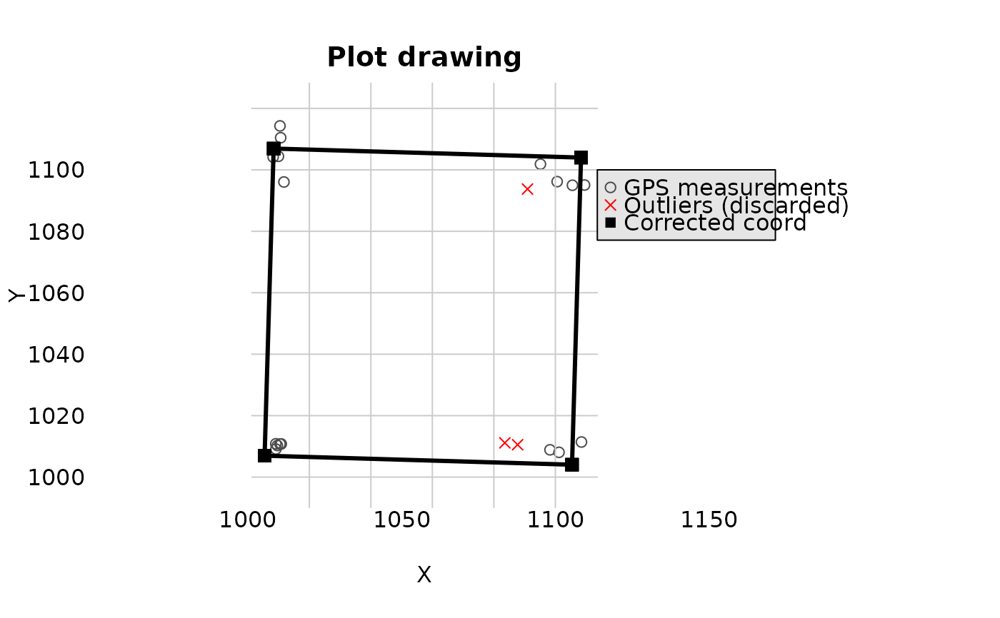

![[Deprecated]](figures/lifecycle-deprecated.svg)
correctCoordGPS() is deprecated and has been replaced by check_plot_coord().
Please see the vignette Spatialized trees and forest stand metrics with BIOMASS
This function builds the most probable GPS coordinates of the plot corners from multiple GPS measurements.
Usage
correctCoordGPS(
longlat = NULL,
projCoord = NULL,
coordRel,
rangeX,
rangeY,
maxDist = 15,
drawPlot = FALSE,
rmOutliers = TRUE
)Arguments
- longlat
(optional) data frame with the coordinate in longitude latitude (eg. cbind(longitude, latitude)).
- projCoord
(optional) data frame with the projected coordinate in X Y
- coordRel
data frame with the relative coordinate in the same order than the longlat or projCoord
- rangeX
a vector of length 2 giving the range for plot relative X coordinates
- rangeY
a vector of length 2 giving the range for plot relative Y coordinates
- maxDist
a numeric giving the maximum distance above which GPS measurements should be considered as outliers (by default 15 m)
- drawPlot
a logical if you want to display a graphical representation
- rmOutliers
a logical if you want to remove the outliers from coordinates calculation
Value
If there are no outliers or rmOutliers = TRUE, a list with:
cornerCoords: a data.frame with the coordinates of the cornerscorrectedCoord: a data.frame with the adjusted coordinates given as inputpolygon: a spatial polygonoutliers: index of coordinates lines considered as outliers, if anycodeUTM: the UTM code of the coordinates if the parameterlonglatis set
Details
GPS coordinates should be either given in longitude latitude (longlat) or in projected coordinates (projCoord)
Examples
projCoord <- data.frame(
X = c(
runif(5, min = 9, max = 11), runif(5, min = 8, max = 12),
runif(5, min = 80, max = 120), runif(5, min = 90, max = 110)
),
Y = c(
runif(5, min = 9, max = 11), runif(5, min = 80, max = 120),
runif(5, min = 8, max = 12), runif(5, min = 90, max = 110)
)
)
projCoord <- projCoord + 1000
coordRel <- data.frame(
X = c(rep(0, 10), rep(100, 10)),
Y = c(rep(c(rep(0, 5), rep(100, 5)), 2))
)
aa <- correctCoordGPS(
projCoord = projCoord, coordRel = coordRel,
rangeX = c(0, 100), rangeY = c(0, 100)
)
#> Warning: This function still work but will be removed (defunct) and replaced by checkCoordPlot in the next version. Please see VIGNETTENAME? vignette
#> Warning: 'correctCoordGPS()' has been replaced by `check_plot_coord()` function and will be removed in the next version.
#> Please see the vignette `Spatialized trees and forest stand metrics with BIOMASS`
bb <- correctCoordGPS(
projCoord = projCoord, coordRel = coordRel,
rangeX = c(0, 100), rangeY = c(0, 100), rmOutliers = TRUE
)
#> Warning: This function still work but will be removed (defunct) and replaced by checkCoordPlot in the next version. Please see VIGNETTENAME? vignette
#> Warning: 'correctCoordGPS()' has been replaced by `check_plot_coord()` function and will be removed in the next version.
#> Please see the vignette `Spatialized trees and forest stand metrics with BIOMASS`
#> Warning: calling par(new=TRUE) with no plot
# \donttest{
correctCoordGPS(
projCoord = projCoord, coordRel = coordRel,
rangeX = c(0, 100), rangeY = c(0, 100), drawPlot = TRUE
)
#> Warning: This function still work but will be removed (defunct) and replaced by checkCoordPlot in the next version. Please see VIGNETTENAME? vignette
#> Warning: 'correctCoordGPS()' has been replaced by `check_plot_coord()` function and will be removed in the next version.
#> Please see the vignette `Spatialized trees and forest stand metrics with BIOMASS`
#> $cornerCoords
#> X Y
#> 1 1005.457 1006.966
#> 2 1105.414 1004.032
#> 3 1108.348 1103.989
#> 4 1008.391 1106.923
#>
#> $correctedCoord
#> X Y
#> 1 1005.457 1006.966
#> 2 1005.457 1006.966
#> 3 1005.457 1006.966
#> 4 1005.457 1006.966
#> 5 1005.457 1006.966
#> 6 1008.391 1106.923
#> 7 1008.391 1106.923
#> 8 1008.391 1106.923
#> 9 1008.391 1106.923
#> 10 1008.391 1106.923
#> 11 1105.414 1004.032
#> 12 1105.414 1004.032
#> 13 1105.414 1004.032
#> 14 1105.414 1004.032
#> 15 1105.414 1004.032
#> 16 1108.348 1103.989
#> 17 1108.348 1103.989
#> 18 1108.348 1103.989
#> 19 1108.348 1103.989
#> 20 1108.348 1103.989
#>
#> $polygon
#> Geometry set for 1 feature
#> Geometry type: POLYGON
#> Dimension: XY
#> Bounding box: xmin: 1005.457 ymin: 1004.032 xmax: 1108.348 ymax: 1106.923
#> CRS: NA
#> POLYGON ((1005.457 1006.966, 1105.414 1004.032,...
#>
#> $outliers
#> [1] 11 14 17
#>
# }
